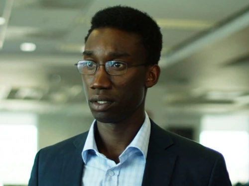
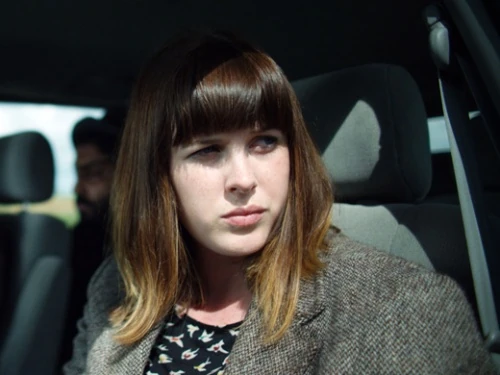
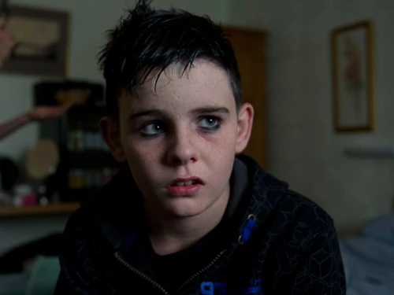
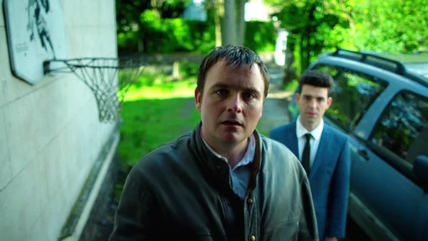

Banda Sonora por Cristobal Tapia de Veer
Utopia es una serie de thriller, drama de misterio, acción, conspiración, ciencia ficción y comedia negra proveniente del Reino Unido que airó desde el 15 de enero de 2013 hasta agosto 12 de 2014. Sus creadores fueron Dennis Kelly, Mark Aldridge, Huw Kennair-Jones, John Donnelly y Clare McDonald.
El argumento de la serie se basa en una comunidad de fanáticos del cómic que cree que la novela gráfica The Utopia Experiments predijo varias epidemias desastrosas, como la enfermedad de las vacas locas (EEB). Una rumoreada secuela inédita supuestamente contiene más información sobre futuros acontecimientos mundiales. Cuando un entusiasta de Utopía consigue el manuscrito, invita a cuatro de sus amigos de un foro en línea a encontrarse en la vida real. Sin embargo, después de hacerse con el manuscrito, los cuatro (Ian, Becky, Wilson y Grant) se encuentran en una situación complicada, ya que una organización secreta conocida sólo como "La Red" está detrás de él. Encuentran sus vidas sistemáticamente desmanteladas, mientras que los agentes de La Red matan a cualquiera que se interponga en su camino mientras buscan el manuscrito y a alguien llamada Jessica Hyde.
Jessica, que ha estado huyendo de La Red toda su vida, se reúne con el grupo y les ayuda a evadir la captura. Mientras tanto, otros personajes se ven atrapados en la órbita de La Red y, a través de sus interacciones con sus agentes, el propósito de la organización y su trama secreta salen a la luz. Cuanto más se acerca la gente a comprender lo que realmente está pasando, más peligrosas se vuelven las cosas. A medida que los rumores sobre la "gripe rusa" proliferan en todo el mundo y una variedad de grupos e individuos se acercan a los protagonistas, intentan resolver la red de misterios y conspiraciones que los rodean.
Lista de Temporadas
- Temporada 1
- 6 Capítulos
- Temporada 2
- 6 Capítulos
- - Temporada 1
- 6 Capítulos
- - Temporada 2
- 6 Capítulos
| Personajes Principales | Nombre | Descripción |
|---|---|---|
 |
Jessica Hyde | El personaje más importante de la serie. La buscan los antagonistas de la historia por la información que posee. Se ha escondido toda su vida y tiene habilidades de supervivencia extraordinarias. |
 |
Wilson Wilson | Parte del grupo principal que tratan de parar los planes de La Red. Es un friki en cuanto a computadoras y como los demás, muy inepto para situaciones de vida o riesgo. |
|  | Ian Johnson | Parte del grupo principal que tratan de parar los planes de La Red. Extrovertido y aburrido con la vida que actualmente tiene, ve su oportunidad de ser un héroe al embarcar esta misión de vida o muerte. |
|  | Becky Todd | Parte del grupo principal que tratan de parar los planes de La Red. Apasionada y con una enfermedad genética degenerativa, ve la oportunidad de su vida al unirse a esta misión para salvar el mundo. |
|  | Grant Leetham | Parte del grupo principal que tratan de parar los planes de La Red. Inicialmente aparentando ser un millonario en la web, termina siendo solo un niño de once años que se termina involucrando con La Red. |
 |
Michael Dugdale | Personaje que está dentro de La Red, mas no es un enemigo. Explora el lado oscuro interno de La Red para ayudar como puede. |
|  | Arby | Antagonista principal de la serie. Actúa como matón de La Red. Hace el trabajo sucio sin preguntar y sin remordimientos. Trabaja junto Lee. |
 |
Lee | Antagonista semi-principal de la serie. Actúa como matón de La Red. Trabaja junto a Arby para llevar acabo el trabajo sucio de La Red. |